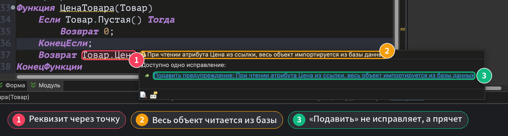
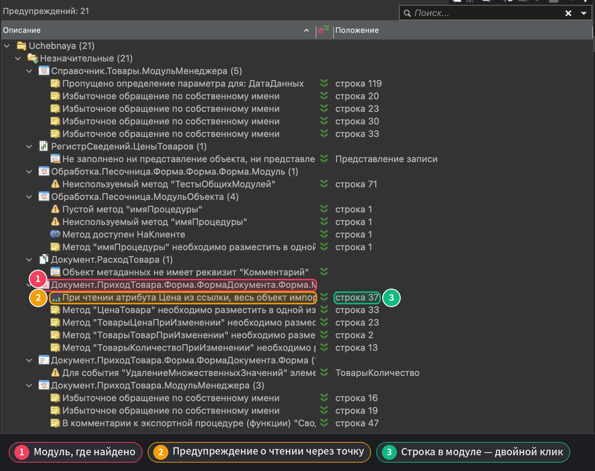

1. Что это, зачем, где найти
Что это. Ошибки, при которых код работает правильно, но медленно. На учебной базе из десятка товаров их не видно. В рабочей базе с тысячами документов из-за них отчёт строится минуту вместо секунды, а проведение документа «подвисает».
Зачем знать. Это первое, что смотрят на ревью кода. И первое, что спросят на собеседовании и на экзамене «1С:Специалист»: «что не так с этим кодом?».
Главная мысль задачи: каждое обращение к базе данных стоит дорого. Быстрый код — тот, который ходит в базу редко и за всем сразу, а не часто и по чуть-чуть.
Аналогия: нужно купить 20 продуктов. Можно сходить в магазин 20 раз — по одному продукту за раз. А можно один раз — со списком. Результат одинаковый, время — в 20 раз разное.
| Ошибка | Что происходит | Где встречается |
|---|---|---|
| Запрос в цикле | Запрос выполняется на каждой итерации — сотни обращений к базе | Код |
| Чтение реквизита через точку в коде | Из базы читается весь объект ради одного поля | Код |
| Длинные «точки» в запросе | Неявные соединения с другими таблицами | Запрос |
| «Точка» от поля составного типа | Соединение со всеми таблицами, на которые может ссылаться поле | Запрос |
Условие в ГДЕ вместо параметра виртуальной таблицы |
Расчёт по всем данным, потом отбрасывание лишнего | Запрос |
2. Запрос в цикле
Как выглядит
Нужно для каждой строки документа узнать цену товара на дату:
// ❌ Плохо: запрос на каждой строке
Для Каждого Строка Из Товары Цикл
Запрос = Новый Запрос;
Запрос.Текст =
"ВЫБРАТЬ Цены.Цена КАК Цена
|ИЗ РегистрСведений.ЦеныТоваров.СрезПоследних(&Дата, Товар = &Товар) КАК Цены";
Запрос.УстановитьПараметр("Дата", Дата);
Запрос.УстановитьПараметр("Товар", Строка.Товар);
Выборка = Запрос.Выполнить().Выбрать();
Если Выборка.Следующий() Тогда
Строка.Цена = Выборка.Цена;
КонецЕсли;
КонецЦикла;
В документе 500 строк — 500 запросов к базе. Каждый сам по себе быстрый, но вместе — долго.
Как правильно
Один запрос за всеми ценами сразу, потом поиск в памяти:
// ✅ Хорошо: один запрос по всем товарам
Запрос = Новый Запрос;
Запрос.Текст =
"ВЫБРАТЬ Цены.Товар КАК Товар, Цены.Цена КАК Цена
|ИЗ РегистрСведений.ЦеныТоваров.СрезПоследних(&Дата, Товар В (&Товары)) КАК Цены";
Запрос.УстановитьПараметр("Дата", Дата);
Запрос.УстановитьПараметр("Товары", Товары.ВыгрузитьКолонку("Товар"));
ЦеныТоваров = Новый Соответствие;
Выборка = Запрос.Выполнить().Выбрать();
Пока Выборка.Следующий() Цикл
ЦеныТоваров.Вставить(Выборка.Товар, Выборка.Цена);
КонецЦикла;
Для Каждого Строка Из Товары Цикл
Цена = ЦеныТоваров.Получить(Строка.Товар);
Строка.Цена = ?(Цена = Неопределено, 0, Цена);
КонецЦикла;
| Шаг | Что делает |
|---|---|
ВыгрузитьКолонку("Товар") |
Массив всех товаров табличной части — для параметра В (&Товары) |
| Один запрос | Цены по всем товарам сразу |
Соответствие |
Товар → цена. Поиск по ключу мгновенный |
| Цикл по строкам | Уже без запросов — только поиск в памяти |
Скрытый запрос в цикле
Запрос в цикле не всегда выглядит как Новый Запрос. Каждое из этого — тоже обращение к базе:
| Код в цикле | Что происходит |
|---|---|
Строка.Товар.Цена |
Чтение объекта товара из базы — раздел 3 |
Справочники.Товары.НайтиПоНаименованию(...) |
Запрос к справочнику |
Ссылка.ПолучитьОбъект() |
Чтение всего объекта |
| Вызов своей функции, внутри которой запрос | Тот же запрос в цикле, только спрятанный |
Правило: видишь цикл — проверь, нет ли внутри обращения к базе. Если есть — вынеси его до цикла: один запрос за всем сразу.
3. «Точки» в коде
Как выглядит
Цена = Товар.Цена; // Товар — ссылка
Ссылка — это только адрес объекта в базе. Чтобы получить Цену, платформа идёт в базу и читает весь объект товара целиком — все реквизиты и табличные части — ради одного поля.
EDT предупреждает об этом:

| № | Что это |
|---|---|
| 1 | Чтение реквизита через точку от ссылки |
| 2 | Текст предупреждения: весь объект читается из базы |
| 3 | «Подавить предупреждение» — только прячет его, проблема остаётся |
Все такие места видны в панели «Ошибки конфигурации»:

| № | Что это |
|---|---|
| 1 | Модуль, в котором найдено |
| 2 | Предупреждение о чтении реквизита через ссылку |
| 3 | Номер строки. Двойной клик по предупреждению — переход к коду |
Когда это проблема
| Ситуация | Проблема? |
|---|---|
| Один раз прочитать одно поле в серверной процедуре, у объекта мало реквизитов | Небольшая. На учебной базе можно |
| Прочитать поле внутри цикла | Да — это запрос в цикле |
| Объект большой: документ с табличными частями на сотни строк | Да — читается всё |
| Несколько полей одного объекта через точку | Да — объект может читаться несколько раз |
Как правильно
| Способ | Когда |
|---|---|
| Взять поле сразу в запросе, который у тебя уже есть | Если данные и так приходят запросом — добавь нужное поле туда |
| Отдельный маленький запрос за нужными полями | Если запроса нет. Читаются только нужные поля, а не весь объект |
ОбщегоНазначения.ЗначениеРеквизитаОбъекта(Ссылка, "Цена") |
В типовых конфигурациях на БСП — готовая функция, внутри маленький запрос |
ОбщегоНазначения.ЗначенияРеквизитовОбъекта(Ссылка, "Цена, Код") |
То же для нескольких полей сразу |
В учебной конфигурации БСП нет, поэтому — маленький запрос. В рабочих типовых — функции БСП.
4. «Точки» в запросе
Как выглядит
ВЫБРАТЬ
ПриходТовараТовары.Товар.Наименование КАК Наименование,
ПриходТовараТовары.Ссылка.Дата КАК Дата
ИЗ
Документ.ПриходТовара.Товары КАК ПриходТовараТовары
Каждая точка от ссылки — это неявное соединение: платформа сама присоединит таблицу справочника «Товары» и таблицу документа, чтобы достать поле.
Когда это нормально
Одна-две точки от поля одного типа — обычная практика. ПриходТовараТовары.Ссылка.Дата или Товар.Наименование — это одно соединение, которое ты бы и так написал руками.
Когда это проблема
Длинные цепочки. Товар.Владелец.Родитель.Ответственный.Наименование — четыре соединения, которые не видно в тексте. Запрос выглядит простым, а работает медленно.
Составной тип — главная ловушка. Если поле может ссылаться на разные таблицы, точка присоединит все эти таблицы:
// ❌ Регистратор может быть приходом, расходом и ещё десятком документов
ОстаткиТоваров.Регистратор.Дата
Регистратор у регистра — составного типа: любой документ-регистратор. Чтобы достать Дату, платформа соединит регистр с таблицами всех документов-регистраторов. Пока их два — терпимо. В типовой конфигурации их десятки.
Как правильно
| Проблема | Решение |
|---|---|
| Нужна дата движения | Бери Период из самого регистра — это и есть дата документа |
| Точно знаешь тип документа | ВЫРАЗИТЬ(ОстаткиТоваров.Регистратор КАК Документ.ПриходТовара).Дата — соединение только с одной таблицей |
| Длинная цепочка точек | Явные соединения в тексте или промежуточная временная таблица |
5. Ещё частые ошибки в запросах
| Ошибка | Почему медленно | Как правильно |
|---|---|---|
Условие на измерения в ГДЕ вместо параметра виртуальной таблицы |
Сначала расчёт по всем данным, потом отбрасывание лишнего | Условие — в параметр: Остатки(&Дата, Товар В (&Товары)) |
Соединение без условия — ПО ИСТИНА |
Каждая строка с каждой: тысячи строк вместо десятков | Всегда условие связи по полю |
ПОДОБНО "%текст%" по большой таблице |
Процент в начале не даёт использовать индекс — перебор всех строк | По возможности искать по началу: ПОДОБНО "текст%" |
ВЫБРАТЬ лишних полей |
Из базы тянется больше данных | Выбирать только нужные поля |
| Временная таблица без индекса, по которой потом соединяют | Поиск перебором | ИНДЕКСИРОВАТЬ ПО полю соединения |
6. Как находить такие ошибки
- Панель «Ошибки конфигурации» в EDT. Чтение через точку и часть других проблем EDT подсвечивает сам. Смотри её перед каждым коммитом.
- Глазами на ревью. Видишь цикл — ищи внутри обращения к базе. Видишь запрос — проверь точки и условия виртуальных таблиц.
- Замер производительности. В режиме отладки EDT умеет показать, на какие строки кода уходит время. Разберём, когда понадобится на реальной задаче.
7. Справочник
Шпаргалка «плохо → хорошо»
| ❌ Плохо | ✅ Хорошо |
|---|---|
| Запрос внутри цикла | Один запрос до цикла, в цикле — поиск по Соответствию |
Ссылка.Реквизит в цикле |
Получить поле в общем запросе заранее |
Ссылка.Реквизит для одного поля |
Маленький запрос или ЗначениеРеквизитаОбъекта в БСП |
Регистратор.Дата |
Период регистра или ВЫРАЗИТЬ(... КАК Документ.Вид) |
| Цепочка из 3–4 точек в запросе | Явные соединения или временная таблица |
Условие на измерение в ГДЕ |
Условие в параметре виртуальной таблицы |
ПО ИСТИНА |
Условие связи |
Соответствие — быстрый поиск по ключу
Цены = Новый Соответствие;
Цены.Вставить(Товар, 500); // положить
Цена = Цены.Получить(Товар); // достать: Неопределено, если ключа нет
Используется, чтобы после одного запроса быстро находить значения в цикле.
Проверь себя
| Что не так? | Ответ |
|---|---|
В цикле по строкам документа — НайтиПоНаименованию |
Обращение к базе на каждой строке. Найти всё одним запросом до цикла |
Сумма = Документ.СуммаДокумента; в цикле по документам |
Чтение всего документа на каждой итерации. Получить сумму в запросе, по которому идёт цикл |
В запросе Движения.Регистратор.Номер |
Регистратор составного типа — соединение со всеми документами. ВЫРАЗИТЬ или другое поле |
Остатки(&Дата) ... ГДЕ Остатки.Товар = &Товар |
Условие должно быть в параметре виртуальной таблицы |
| EDT предупреждает о чтении через ссылку — нажать «Подавить»? | Нет: подавление прячет предупреждение, а не исправляет проблему |